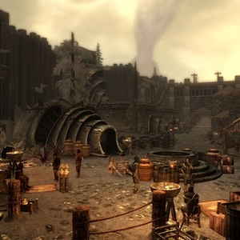
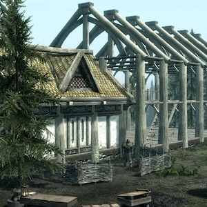
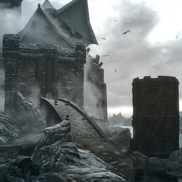
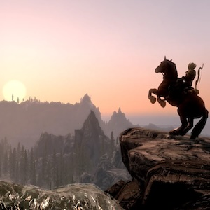
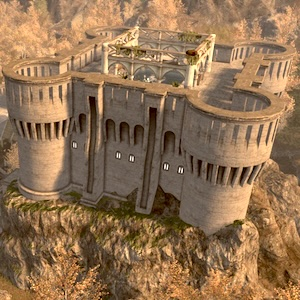

нормальные люди начали играть в скайрим в 2011 году, через пару лет ушли в моды, и лет через пять-десять бросили это дело, переключившись на что-то более современное, чего с тех пор понавыходило столько, что на три жизни хватит. я же открыл для себя скайрим только в прошлом году, и открыл как следует, только за один 2025-й год наиграв там полтыщи часов. я понимаю, что это нубские статы, но для человека, у которого уже есть семья, работа, а также всякие времясъедающие хобби вроде боевых искусств или вики-энциклопедий, показатели всё-таки ничотак.
судя по ачивке «Unbound», играть я начал 11 июня 2025.
моды я для себя открыл уже где-то через полгода игры, не дожидаясь, пока совсем уж наскучит основная часть. ниже собраны те, которые я уже пробовал и которые хорошо зашли. есичо, рекомендую. чисто эстетические моды вроде тех, что улучшают текстуры или полигональные сетки, я пропускал. и да, я действительно не пользуюсь USSEP — ретрогеймить так ретрогеймить, багам надо радоваться и душу им открывать, а не заплатки на них ставить.



AI Overhaul


несколько ещё мыслей по поводу:
- длц про огненный очаг совершенно не зашёл: это прекрасная идея — самому строить особняк и его обустраивать, но её исполнение сводится к тому, что надо всё бросить, выйти из дома и пойти к верстаку, потому что тебе не хватает гвоздей, а наградой в итоге будет слишком громоздкий дом, как тот, что достался в Маркарте. в итоге в усадьбе с видом на озеро я сделал кроме стен только манекенов и настенные плашки для трофеев, в Ветрограде дальше стен вообще не продвинулся, а до Хелъярхена вообще не дошёл ещё.
- Барбос ведёт себя невыносимо, лает не по делу и толкает под руку, сбивая прицел и иногда даже сталкивая с обрыва, хотя и здорово помогает прорваться через средние уровни; Серана потом выполняет ту же функцию куда успешнее.
- все карты Скайрима — ужас-ужас-ужас, но это, как я понимаю, так задумано. я поставил мод, после которого хотя бы по карте мира что-то можно увидеть и куда-то пробраться, а локальные карты любого места не годятся никуда.
- Фальскаар ок, вполне на уровне Солстхейма, даром что он чисто фанатский, а тот за зарплату делался.
- Элсвейр ничотак, но есть проседающие моменты вроде коридоров, по которым пять раз надо по десять минут идти, да и каджитами я что-то так до конца и не проникся, извините. ну и дольше пары часов там делать нечего.
- на очереди Вигилант, Забытый город, Акавир, За рубежи, Могильный ветер, Умбры нет, Ужас Дрез’кт’ара, Хранитель побережья, Сиреновый корень и т.п. — я никуда не тороплюсь.